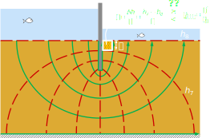

We learned how to calculate total head and hydraulic gradients in soils.
We learned to calculate seepage flow in 1D problems.
We learned how to calculate the permeability of uniforms and layered soils.
Contents
Mass balance and Laplace equation.
Flow nets.
Uplift pressure.
Seepage erosion and piping
Solutions if erosion is a potential problem.
Objectives covered in this lecture
[O2]: Develop an understanding of the importance of groundwater and seepage and its role in evaluating the effective stress in soils
After this lecture we will able to:
Calculate the field of total head, hydraulic gradients, and seepage velocities in 2D.
Calculate the uplift pressure produced by seepage on structures.
Determine factor of safety against internal erosion.
Seepage 2D/3D: Governing equation
The governing equation that describes the motion of water in soils is a Laplace equation. It is derived assuming that water and the soil skeleton is incompressible. Darcy's law is assumed valid.
Erosion: mobilization of solid grains due to watr flow (seepage forces).
Recall: In this course we have seen that the soil strength depends directly on the contacts beyween solid grains. The effective stress quantifies contact forces. If solid particles are not in contact, soil becomes a fluid with no shear resistance.
If \(\sigma'=0\), there is no contact between solid grains, soil becomes internally unstable, and grains can be dragged away.
Factor of safety againts piping:
$$FS=\cfrac{i_{crit}}{i_{max}}$$
Erosion due to seepage
Erosion will start if \(FS\leq 1\).
It is important to identify what "element" in a flow net has the maximun hydraulic gradient.
Erosion (also called piping) usually begins at downstream side (upwardflow).
Because the total head drop is constant between equipotentials, the size of elements control the hydraulic gradient \(\longrightarrow\) Smaller elements will have larger hydraulic gradients.
Example 4.7
For the example in the figure, determine the factor of safety against piping knowing \(G_s=2.65\) and \(\gamma_{sat}=15.2\) kN/m\(^3\)

Erosion due to seepage
Lower the upstream water level.
$$\downarrow H_1 \longrightarrow \downarrow \Delta h \longrightarrow \downarrow i$$
Place a filter material downstream (increase weight downstream).
Increase the length of the flow.
$$\uparrow L \longrightarrow \downarrow i$$